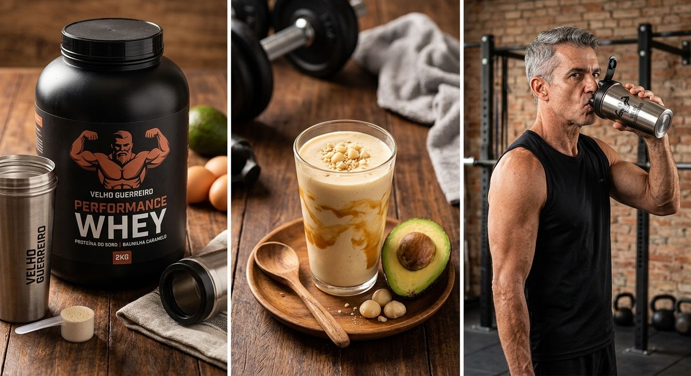
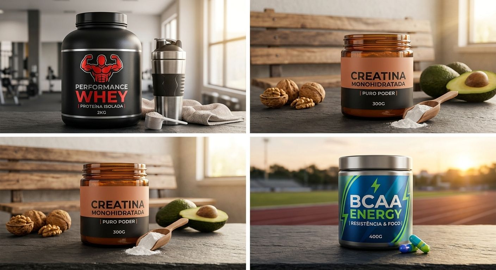

Guia Definitivo de Creatina e Whey Protein: Vale a Pena?
No universo do fitness e da musculação, poucos assuntos geram tantas dúvidas quanto o uso de suplementos. Entre dezenas de potes e promessas nas prateleiras, dois produtos se destacam como os verdadeiros pilares para quem busca ganho de massa magra: a **Creatina** e o **Whey Protein**.
Mas será que eles realmente entregam o que prometem? Vale a pena investir o seu dinheiro nessa dupla? Entenda o papel de cada um no processo de hipertrofia e como utilizá-los para maximizar seus resultados na academia.

1. Creatina: A Rainha da Força e Potência
A creatina é o suplemento mais estudado e comprovado pela ciência esportiva no mundo. Armazenada nos músculos sob a forma de fosfocreatina, sua principal função é regenerar rapidamente o ATP (a molécula de energia do nosso corpo) durante exercícios de alta intensidade e curta duração.
- Aumento de Força: Permite levantar mais carga ou realizar repetições extras antes da falha.
- Volumização Muscular: Atrai água para dentro das células musculares, aumentando o volume celular e estimulando a síntese proteica.
- Como Tomar: A dosagem padrão é de 3g a 5g por dia. O segredo da creatina é a consistência; ela funciona por acúmulo no organismo, devendo ser tomada diariamente, inclusive nos dias de descanso.
2. Whey Protein: Praticidade e Reconstrução Muscular
O Whey Protein é a proteína extraída do soro do leite. Trata-se de uma fonte proteica de altíssimo valor biológico, rica em aminoácidos essenciais (especialmente a leucina, responsável por disparar o sinal de construção de massa magra).
É importante destacar: o Whey Protein não é uma Poção Mágica. Ele é simplesmente comida em pó. Sua grande vantagem está na praticidade de atingir a meta diária de proteínas (cerca de 1,6g a 2,2g por quilo de peso corporal) sem precisar preparar refeições sólidas o tempo todo.

3. Qual a Diferença entre Concentrado, Isolado e Hidrolisado?
Na hora de escolher o seu Whey Protein, você encontrará três tipos principais:
- Concentrado (WPC): Mantém cerca de 70% a 80% de proteína, contendo pequena quantidade de carboidratos e lactose. Excelente custo-benefício para a maioria das pessoas.
- Isolado (WPI): Possui 90% ou mais de pureza proteica, com quase zero carboidrato e lactose. Ideal para quem está em fase restrita de calorias ou tem intolerância à lactose.
- Hidrolisado (WPH): Passa por um processo de quebra que acelera a absorção. Indicado principalmente para atletas profissionais ou pessoas com severos problemas digestivos.
Veredito: Vale a Pena Investir?
Sim, vale a pena! Se o seu objetivo é o ganho de massa magra, a combinação de Creatina com Whey Protein oferece o melhor retorno do mercado. A Creatina garante o estímulo de força necessário para treinos pesados na academia, enquanto o Whey fornece o bloco construtor para reparar e fazer esse músculo crescer durante o descanso.